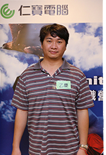

|  | 以下是戰地記者陳乙慶在金山天籟會館截錄到的一段對話： 為何一群人只喊出了同一種聲音，同一個名字？戰地記者實地訪問了與他同名同姓的黃埔31夥伴陳乙慶，以下是訪談內容。 |
| 『夥伴，這兩個字的精神與意義。誠如我們教官跟我們解釋字面上的意義。多人一起努力並分享成果，一人一半。但字面下，這兩個字所擔負的精神和義務，要比你我想像的更為巨大。』
『請問這個營隊的活動內容是甚麼？為什麼你們從一盤散沙到現在眾志成城？』 『我無法透露太多…但我能夠告訴你的是，每個人內心都有一股力量，它代表著無限的可能。這股力量擁有強大的能量，可以讓你完成你以為無法完成的任務，但它需要每一個人共同努力，才能把它發揮出來。而教練的任務，不過是幫助我們認識和學習使用這股力量罷了。』 『請問你從這次的營隊活動中，學到或是體會到了甚麼？』 『犧牲！如同我對營隊裡分享給夥伴們的話，You realize sacrifice, you are one of the team，中文的意思大致是，當你了解甚麼是犧牲自我，你才能算得上是一個團隊的一員。這樣的精神，絕對是世上最強大的力量，就 好像電影康斯坦丁中約翰在最後一幕犧牲了自己的生命，以 至於連撒旦都無法擊敗他。』 『請問你有甚麼心得要分享給各位讀者聽眾？』 『在這個營隊活動裡面，看到許多夥伴為了任務，貢獻了他們的力量與智慧，揮灑了他們的汗水和淚水，竭盡所能地完成了一個又一個看似不可能的任務，一次又一次的證明彼此的信念和堅持。我從中看到了無數的犧牲，不論犧牲的是自己的身體或是體力，堅持著頂住夥伴們的身軀；還是犧牲自己的想法和衝動，去接納夥伴們共同的方法和決策，這都是犧牲的一種體現。我對於這樣的舉動，內心真的很衝擊和感動。這樣的氛圍，會讓人想要立刻衝出來也把自己的一切犧牲奉獻出來。總之，這種精神直到現在仍然讓我久久不能自己。我希望所有的人都可以透過各種活動或是管道，去了解這樣的精神是甚麼，然後把它體現在你的周遭，不論是你的部門，你的朋友，甚至是你的家人，你都應該學著運用它，然後分享這一切的成果，我相信你得到的會遠比你付出得要多出更多。』 『說得太好了，我都忍不住想要體驗一下這個營隊課程了。礙於字數關係，今天就分享介紹到這裡，希望各位讀者聽眾看了後也想要立刻參加下一期的營隊。以上是戰地記者陳乙慶在金山的報導。我要去報下一梯次了。』 |
|